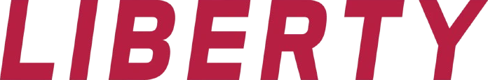

Approved Scale · Liberty · logo
PEPTIDES removed, LIBERTY kept, and the helix mark rescaled to sit against a single line instead of a stack. The lettering is your own artwork placed at its original size, so the letterforms here are pixel for pixel the ones in your current logo. Only the mark was resized. Five files in total, all with transparent backgrounds, one of them a reversed version for dark placements.
All five PNGs at full resolution with transparent backgrounds, plus a short readme naming what each one is and which to reach for.
All five are drawn here at the same scale, so the word is the same size in every tile and the only thing changing is the mark. The reversed one is shown on navy, because a transparent file is only as good as the ground it lands on.
804 x 144
The same lockup for dark grounds, the mark's navy remapped to white.
821 x 172
Mark at 1.5x. Closest in feel to the current stacked logo.

696 x 115
No mark at all. The one to test if the helix is what ad review is stopping.
Taken off your transparent logo file directly. Worth knowing that the file is named as though it were 2048 by 651 and is actually 886 by 281, so the name is not a safe thing to size from.
| element | x | y | size |
|---|---|---|---|
| mark | 6..154 | 14..264 | 149 x 251 |
| LIBERTY | 178..873 | 15..129 | 696 x 115 |
| PEPTIDES | 178..868 | 157..266 | 691 x 110 |
The two lines are set to within five pixels of the same width, with LIBERTY the wider of the two, so removing PEPTIDES costs the lockup no width and the word needed no reworking at all. The real work was the mark, which stood 251 tall against a 115 tall word and had to come down and re-centre. The gap between mark and word stayed at the original 23 pixels, because that gap belongs to the lettering and the lettering has not changed size.
The mark still reads as biotech. If the point of this is getting past ad review, removing the word may not be enough on its own, because the helix is the part an automated reviewer looks at. The mark has deliberately been left exactly as it is, since redesigning it is a bigger decision than this job. The wordmark-only file is there to test without it.
The current logo has no dark version. On a dark ground the navy dots and bars sink into the background, and the pale rings are transparent holes rather than white fill, so they fill with the background too. That is the existing artwork rather than anything introduced here. The reversed file fixes it. Note it keeps the crimson lettering rather than lightening it, so the word holds its brand colour but sits at lower contrast on dark than it does on white. If legibility matters more than exact colour on dark placements, that is a quick change.
Two limits. These are pixel files at their natural size, fine for web, social and ads, but print or large format wants the lettering rebuilt as vector rather than these scaled up. And the source had been saved in a lossy format at some point, so the flat colours carry faint compression noise and the crimson samples several near-identical values rather than one exact figure. Invisible in use, but do not read an official brand hex off these. If the original vector logo exists, it would let all of this be rebuilt clean.
Approved Scale · prepared 10 September 2026 · reply on this thread for changes
{kind=link}
{kind=link}
{kind=link}
{kind=link}
{kind=link}